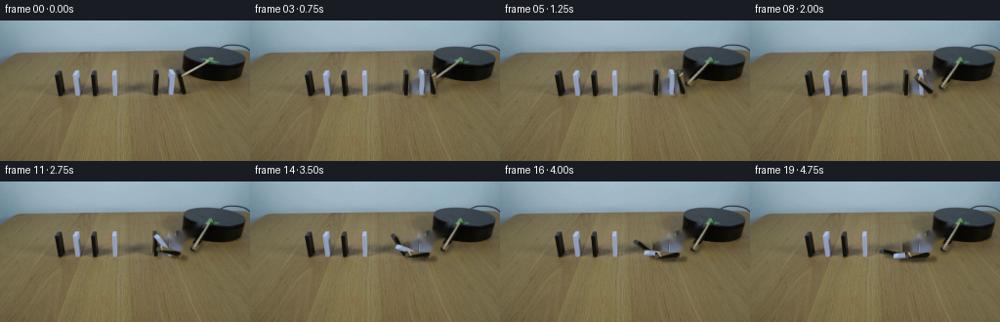
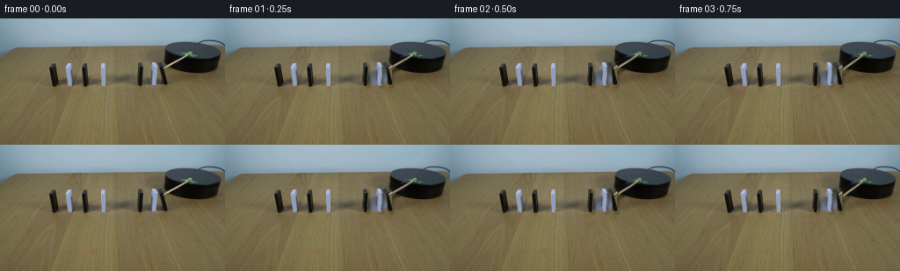
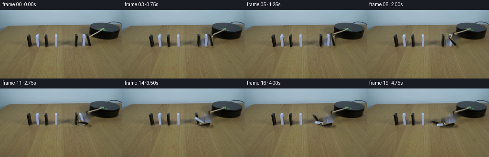
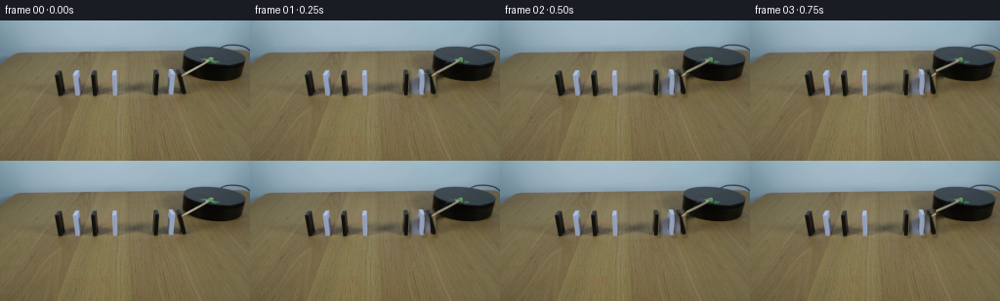

CODING AGENTS AS PIXEL WORLD MODELS
traex/DeepSeek-V4.1-Flash · 0050
点击播放 · 原生 RGB 像素
逐轮保存的候选
回放视频、检查图与代码变化。
每份候选均可单独播放。实际图片检查记录在下方工具轨迹中。
候选 01播放与检查图
点击播放 · 原生 RGB 像素


展开代码变化
--- 上一保存版本
+++ 本次保存版本
@@ -0,0 +1,200 @@
+from pathlib import Path
+
+import cv2
+import numpy as np
+from PIL import Image
+
+import artifact_io
+
+
+ROOT = Path(__file__).resolve().parent
+WIDTH = 256
+HEIGHT = 144
+FRAME_COUNT = 20
+FPS = 4
+
+
+# The three dominoes nearest the platform are the active row. Their left
+# neighbours are outside the platform's reach and stay untouched.
+PIECES = [
+ {
+ "name": "black_far",
+ "kind": "black",
+ "polygon": [(157, 50), (162, 50), (163, 77), (158, 77)],
+ "pivot": (158.0, 77.0),
+ },
+ {
+ "name": "white_mid",
+ "kind": "white",
+ "polygon": [(173, 50), (178, 50), (179, 77), (174, 77)],
+ "pivot": (174.0, 77.0),
+ },
+ {
+ "name": "black_near",
+ "kind": "black",
+ "polygon": [(184, 51), (190, 51), (190, 77), (185, 77)],
+ "pivot": (185.0, 77.0),
+ },
+]
+
+
+def polygon_alpha(points, shape, scale=4):
+ """Antialiased polygon mask for an RGB crop."""
+ height, width = shape
+ high = np.zeros((height * scale, width * scale), np.uint8)
+ scaled = np.asarray(points, np.float32) * scale
+ cv2.fillPoly(high, [np.rint(scaled).astype(np.int32)], 255, cv2.LINE_AA)
+ return cv2.resize(high, (width, height), interpolation=cv2.INTER_AREA)
+
+
+def make_piece_sprite(image, piece):
+ points = piece["polygon"]
+ x0 = max(0, min(p[0] for p in points) - 2)
+ x1 = min(WIDTH, max(p[0] for p in points) + 3)
+ y0 = max(0, min(p[1] for p in points) - 2)
+ y1 = min(HEIGHT, max(p[1] for p in points) + 2)
+
+ local = [(x - x0, y - y0) for x, y in points]
+ alpha = polygon_alpha(local, (y1 - y0, x1 - x0))
+ rgb = image[y0:y1, x0:x1].copy()
+ return {"rgb": rgb, "alpha": alpha, "origin": (x0, y0)}
+
+
+def make_stick_sprite(image):
+ # The pale wooden lever is the bright diagonal on the black platform.
+ x0, y0, x1, y1 = 183, 36, 218, 60
+ rgb = image[y0:y1, x0:x1].copy()
+ local = np.zeros(rgb.shape[:2], np.uint8)
+ cv2.line(local, (215 - x0, 40 - y0), (186 - x0, 56 - y0),
+ 255, 5, cv2.LINE_AA)
+ alpha = (local.astype(np.float32) * 0.92).astype(np.uint8)
+ return {"rgb": rgb, "alpha": alpha, "origin": (x0, y0)}
+
+
+def build_clean_plate(image):
+ """Remove only the moving row and lever; the other row remains exact."""
+ mask = np.zeros((HEIGHT, WIDTH), np.uint8)
+
+ for piece in PIECES:
+ body = np.asarray(piece["polygon"], np.int32)
+ cv2.fillPoly(mask, [body], 255)
+ x0, y0 = int(body[:, 0].min()), int(body[:, 1].min())
+ x1, y1 = int(body[:, 0].max()), int(body[:, 1].max())
+ cv2.ellipse(mask, ((x0 + x1) // 2 + 5, y1 - 2),
+ (max(5, (x1 - x0) // 2 + 6), 6), 0, 0, 360, 255, -1)
+ cv2.rectangle(mask, (x1 - 1, y0 + 5), (x1 + 8, y1 + 1), 255, -1)
+
+ cv2.line(mask, (215, 40), (186, 56), 255, 7, cv2.LINE_AA)
+ return cv2.inpaint(image, mask, 4, cv2.INPAINT_TELEA)
+
+
+def warp_sprite(sprite, angle_deg, pivot):
+ """Rotate a sprite around a pivot and return full-frame RGBA layers."""
+ rgb = sprite["rgb"]
+ alpha = sprite["alpha"]
+ ox, oy = sprite["origin"]
+ px, py = pivot
+
+ matrix = cv2.getRotationMatrix2D((px - ox, py - oy), angle_deg, 1.0)
+ matrix[0, 2] += ox
+ matrix[1, 2] += oy
+ warped_rgb = cv2.warpAffine(
+ rgb, matrix, (WIDTH, HEIGHT), flags=cv2.INTER_LINEAR,
+ borderMode=cv2.BORDER_CONSTANT, borderValue=(0, 0, 0),
+ )
+ warped_alpha = cv2.warpAffine(
+ alpha, matrix, (WIDTH, HEIGHT), flags=cv2.INTER_LINEAR,
+ borderMode=cv2.BORDER_CONSTANT, borderValue=0,
+ )
+ return warped_rgb, warped_alpha
+
+
+def add_shadow(frame, alpha, shift=(3, 3), strength=0.30):
+ shifted = np.zeros_like(alpha)
+ dx, dy = shift
+ src_x0 = max(0, -dx)
+ src_x1 = min(WIDTH, WIDTH - dx)
+ src_y0 = max(0, -dy)
+ src_y1 = min(HEIGHT, HEIGHT - dy)
+ shifted[src_y0 + dy:src_y1 + dy, src_x0 + dx:src_x1 + dx] = (
+ alpha[src_y0:src_y1, src_x0:src_x1]
+ )
+ soft = cv2.GaussianBlur(shifted, (0, 0), 1.15).astype(np.float32) / 255.0
+ frame[:] = frame * (1.0 - strength * soft[..., None])
+
+
+def composite(frame, rgb, alpha):
+ a = alpha.astype(np.float32)[..., None] / 255.0
+ frame[:] = rgb.astype(np.float32) * a + frame * (1.0 - a)
+
+
+def smoothstep(x):
+ x = np.clip(x, 0.0, 1.0)
+ return x * x * (3.0 - 2.0 * x)
+
+
+def motion_curves():
+ near = np.array([0, 0, 0, 0, 1.5, 7, 16, 28, 40, 52, 63, 72, 79,
+ 84, 87, 89, 90, 89.2, 90, 90], float)
+ mid = np.array([0, 0, 0, 0, 0, 0, 0, 0, 3, 12, 24, 36, 48, 59,
+ 68, 76, 82, 86, 88.5, 89.5], float)
+ far = np.array([0, 0, 0, 0, 0, 0, 0, 0, 0, 0, 0, 2, 9, 19,
+ 31, 43, 54, 64, 72, 79], float)
+ stick = np.array([0, 1.2, 3.5, 7.0, 12.0, 17.0, 21.0, 24.0, 26.0,
+ 27.5, 28.5, 29.0, 29.5, 29.5, 29.5, 29.5, 29.5,
+ 29.5, 29.5, 29.5])
+ return [far, mid, near], stick
+
+
+def render_frames(image):
+ clean = build_clean_plate(image)
+ sprites = [make_piece_sprite(image, piece) for piece in PIECES]
+ stick = make_stick_sprite(image)
+ angles, stick_angles = motion_curves()
+
+ frames = np.empty((FRAME_COUNT, HEIGHT, WIDTH, 3), np.uint8)
+ frames[0] = image
+
+ for frame_index in range(1, FRAME_COUNT):
+ frame = clean.astype(np.float32).copy()
+
+ stick_rgb, stick_alpha = warp_sprite(
+ stick, float(stick_angles[frame_index]), (215.0, 40.0)
+ )
+ add_shadow(frame, stick_alpha, shift=(2, 3), strength=0.22)
+ composite(frame, stick_rgb, stick_alpha)
+
+ warped = []
+ for piece, sprite, curve in zip(PIECES, sprites, angles):
+ angle = float(curve[frame_index])
+ rgb, alpha = warp_sprite(sprite, angle, piece["pivot"])
+ warped.append((piece, angle, rgb, alpha))
+
+ for piece, angle, rgb, alpha in warped:
+ fall = smoothstep(angle / 75.0)
+ add_shadow(
+ frame, alpha,
+ shift=(int(round(2 + 4 * fall)), int(round(2 + 2 * fall))),
+ strength=0.24 + 0.10 * fall,
+ )
+
+ for piece, angle, rgb, alpha in warped:
+ composite(frame, rgb, alpha)
+
+ rng = np.random.default_rng(1000 + frame_index)
+ frame += rng.normal(0.0, 0.75, (HEIGHT, WIDTH, 1))
+ frames[frame_index] = np.clip(frame, 0, 255).astype(np.uint8)
+
+ return frames
+
+
+def main():
+ image = np.asarray(Image.open(ROOT / "first_frame.png").convert("RGB"))
+ assert image.shape == (HEIGHT, WIDTH, 3)
+ frames = render_frames(image)
+ assert np.array_equal(frames[0], image)
+ artifact_io.save(frames, ROOT)
+
+
+if __name__ == "__main__":
+ main()
候选 02播放与检查图
点击播放 · 原生 RGB 像素


展开代码变化
--- 上一保存版本
+++ 本次保存版本
@@ -134,15 +134,17 @@
def motion_curves():
- near = np.array([0, 0, 0, 0, 1.5, 7, 16, 28, 40, 52, 63, 72, 79,
- 84, 87, 89, 90, 89.2, 90, 90], float)
- mid = np.array([0, 0, 0, 0, 0, 0, 0, 0, 3, 12, 24, 36, 48, 59,
- 68, 76, 82, 86, 88.5, 89.5], float)
- far = np.array([0, 0, 0, 0, 0, 0, 0, 0, 0, 0, 0, 2, 9, 19,
- 31, 43, 54, 64, 72, 79], float)
- stick = np.array([0, 1.2, 3.5, 7.0, 12.0, 17.0, 21.0, 24.0, 26.0,
- 27.5, 28.5, 29.0, 29.5, 29.5, 29.5, 29.5, 29.5,
- 29.5, 29.5, 29.5])
+ # Negative angles are clockwise in OpenCV's image coordinate system.
+ # The lever makes contact around frame 4, then the impulse runs leftward.
+ near = np.array([0, 0, 0, 0, 0.8, 4, 11, 21, 33, 46, 59, 70, 79,
+ 85, 88, 90, 89.4, 90, 90, 90], float)
+ mid = np.array([0, 0, 0, 0, 0, 0, 0, 0, 0, 2, 8, 18, 30, 43,
+ 56, 68, 78, 85, 89, 90], float)
+ far = np.array([0, 0, 0, 0, 0, 0, 0, 0, 0, 0, 0, 0, 1, 5,
+ 12, 23, 36, 50, 63, 74], float)
+ stick = np.array([0, -0.8, -2.2, -4.8, -7.8, -10.2, -11.8, -12.5,
+ -12.8, -12.8, -12.8, -12.8, -12.8, -12.8, -12.8,
+ -12.8, -12.8, -12.8, -12.8, -12.8])
return [far, mid, near], stick
@@ -181,8 +183,6 @@
for piece, angle, rgb, alpha in warped:
composite(frame, rgb, alpha)
- rng = np.random.default_rng(1000 + frame_index)
- frame += rng.normal(0.0, 0.75, (HEIGHT, WIDTH, 1))
frames[frame_index] = np.clip(frame, 0, 255).astype(np.uint8)
return frames
可观测工具轨迹
实际执行的命令与返回图片。
命令 1exit 0
/bin/bash -c "pwd && rg --files -g '"'!*__pycache__*'"' | sed -n '1,200p'"
命令 2exit 0
/bin/bash -c "sed -n '1,240p' prompt.txt"
命令 3exit 0
/bin/bash -c "sed -n '1,280p' GENERATION_RULES.md"
命令 4exit 0
/bin/bash -c 'file first_frame.png && identify first_frame.png 2>/dev/null || true && ls -lh'
命令 5exit 0
/bin/bash -c "sed -n '1,260p' artifact_io.py"
命令 6exit 0
/bin/bash -c "python - <<'PY'
from PIL import Image
im=Image.open('first_frame.png')
print(im.size, im.mode)
print(im.getextrema())
# mean colors by 16x9 tile
import numpy as np
a=np.asarray(im.convert('RGB'))
for y in range(0,144,16):
row=[]
for x in range(0,256,32):
t=a[y:y+16,x:x+32]
row.append('%02x%02x%02x'%tuple(t.reshape(-1,3).mean(0).astype(int)))
print('%3d'%y,' '.join(row))
PY"命令 7exit 0
/bin/bash -c "sed -n '1,260p' player_template.html"
命令 8exit 0
/bin/bash -c "python - <<'PY'
from PIL import Image
import numpy as np
from sklearn.cluster import KMeans
im=np.asarray(Image.open('first_frame.png').convert('RGB'))
print('unique',len(np.unique(im.reshape(-1,3),axis=0)))
# most common exact colors
v,c=np.unique(im.reshape(-1,3),axis=0,return_counts=True)
for i in np.argsort(c)[-40:][::-1]: print(tuple(v[i]),c[i])
PY"命令 9exit 0
/bin/bash -c "python - <<'PY'
from PIL import Image
import numpy as np
im=np.asarray(Image.open('first_frame.png').convert('RGB')).astype(float)
# tile classification at 2x2 => 128x72: dark D, white W, blue B, wood T, other .
for y in range(0,144,2):
line=''
for x in range(0,256,2):
p=im[y:y+2,x:x+2].mean((0,1)); r,g,b=p; mx=max(p); mn=min(p); sat=mx-mn; lum=p.mean()
if lum<35: ch='@'
elif lum<65: ch='#'
elif lum>210 and sat<30: ch='W'
elif lum>170 and sat<25: ch='w'
elif b-r>15 and b-g>0: ch='B'
elif r-b>10 and r-g>5 and lum>65: ch='T'
elif sat>20: ch='t'
elif lum<100: ch='d'
else: ch='.'
line+=ch
print(line)
PY"命令 10exit 0
/bin/bash -c "python - <<'PY'
from PIL import Image
import numpy as np
im=np.asarray(Image.open('first_frame.png').convert('RGB')).astype(int)
# classify dark (<80), bright (>145), blue(cyan)
mask=im.mean(2)<80
# connected comps scipy
from scipy.ndimage import label
lab,n=label(mask)
for k in range(1,n+1):
ys,xs=np.where(lab==k); s=len(xs)
if s>=10:
print(s,(xs.min(),ys.min(),xs.max(),ys.max()), tuple(np.rint(im[ys,xs].mean(0)).astype(int)))
PY"命令 11exit 0
/bin/bash -c "python - <<'PY'
from PIL import Image
import numpy as np
im=np.asarray(Image.open('first_frame.png').convert('RGB')).astype(int)
# print selected rows runs based on classification
for y in [18,20,22,24,26,28,30,32,40,50,60,70,75,80,90,100,110,120,130]:
p=im[y]; lum=p.mean(1); sat=p.max(1)-p.min(1); blue=p[:,2]-p[:,0]
cls=np.where(lum<55,'#',np.where((lum>170)&(sat<35),'W',np.where(blue>20,'B',np.where(sat>18,'t','.'))))
runs=[]; s=0
for x in range(1,256):
if cls[x]"'!=cls[x-1]: runs.append((s,x-1,cls[x-1])); s=x
runs.append((s,255,cls[255]))
print(y, '"' '.join(f'{a}-{b}{c}' for a,b,c in runs if b-a>=1))
PY"命令 12exit 0
/bin/bash -c "python - <<'PY'
from PIL import Image
import numpy as np
im=np.asarray(Image.open('first_frame.png').convert('RGB'))
# save enlarged crops with nearest/bilinear for analysis though visual unavailable
Image.fromarray(im[24:84,20:240]).resize((880,240)).save('.tmp/crop.png')
# print x-gradient energy rows to find tile starts
for y in [50,60,70]:
g=np.abs(np.diff(im[y].astype(int),axis=0)).sum(1)
print(y,[(i,int(v)) for i,v in enumerate(g) if v>120])
PY"命令 13exit 0
/bin/bash -c "python - <<'PY'
from PIL import Image
import numpy as np
im=np.asarray(Image.open('first_frame.png').convert('RGB')).astype(float)
# print rgb values at grid over area
for y in range(30,80,4):
print('y',y)
for x in range(20,240,8):
p=im[y:y+4,x:x+8].mean((0,1)).astype(int)
print('%3d:%3d,%3d,%3d'%(x,*p),end=' ')
print()
PY"命令 14exit 0
/bin/bash -c "python - <<'PY'
from PIL import Image
import numpy as np
im=np.asarray(Image.open('first_frame.png').convert('RGB')).astype(float)
# dark threshold mask; print bounding boxes per x intervals
for lo,hi in [(20,180),(180,256)]:
a=im[35:78,lo:hi]
mask=a.mean(2)<80
ys,xs=np.where(mask)
print(lo,hi,(xs.min()+lo,ys.min()+35,xs.max()+lo,ys.max()+35))
# row dark x extents
for y in range(35,78):
xs=np.where(im[y].mean(1)<80)[0]
if len(xs):
print(y, xs.min(),xs.max(),len(xs))
PY"命令 15exit 0
/bin/bash -c "python - <<'PY'
from PIL import Image
import numpy as np
im=np.asarray(Image.open('first_frame.png').convert('RGB')).astype(float)
# Background estimate for each row from medians of x 5:50 and 230:250 perhaps
for y in range(25,81):
p=im[y]
print(y, tuple(np.rint(np.median(p[5:55],axis=0)).astype(int)), tuple(np.rint(np.median(p[220:250],axis=0)).astype(int)))
PY"命令 16exit 0
/bin/bash -c "python - <<'PY'
from PIL import Image
import numpy as np
im=np.asarray(Image.open('first_frame.png').convert('RGB')).astype(float)
# Print ascii 128x72, blue b, wood '=', dark #, white W, gray +, green g
for y in range(24,84):
s=''
for x in range(0,256,2):
p=im[y:y+2,x:x+2].mean((0,1)); r,g,b=p; lum=p.mean(); sat=p.max()-p.min()
if lum<45: c='#'
elif lum<75: c='x'
elif b-r>18 and b-g>0: c='B'
elif g-r>5 and g-b>0 and lum>70: c='g'
elif lum>145 and sat<35: c='W'
elif lum>135 and sat<35: c='w'
elif lum>90 and r-b>18: c='='
elif lum>70 and r-b>10: c='-'
elif lum>110: c='+'
else: c='.'
s+=c
print('%3d %s'%(y,s))
PY"命令 17exit 0
/bin/bash -c "python - <<'PY'
from PIL import Image
import numpy as np
im=np.asarray(Image.open('first_frame.png').convert('RGB'))
# rows 50-77 x 40-200 RGB at every 2 pixel summarized; detect boundary colors
# print exact local runs at y 52/55/60 for x 40..200
for y in [48,49,50,51,52,53,54,55,56,57,58,59,60,61,62,63,64,65,66,67,68,69,70,71,72,73,74,75,76,77]:
print('\\ny=',y)
for x in range(40,205):
r,g,b=map(int,im[y,x]); lum=(r+g+b)/3
if lum<70: c='#'
elif lum>150 and max(r,g,b)-min(r,g,b)<30: c='W'
elif b-r>15: c='B'
elif lum<100: c='d'
elif lum<125: c='m'
else: c='.'
print(c,end='')
print()
PY"命令 18exit 0
/bin/bash -c "ls -la && find . -maxdepth 2 -type f -printf '%p %s bytes\\n' | sort"
命令 19exit 0
/bin/bash -c "python - <<'PY'
from PIL import Image
import numpy as np
im=np.asarray(Image.open('first_frame.png').convert('RGB')).astype(float)
# ASCII brightness block 4x4 with category based on chroma/luminance
chars=' .:-=+*#%@'
for y in range(0,144,4):
s=''
for x in range(0,256,4):
p=im[y:y+4,x:x+4].mean((0,1)); r,g,b=p
# brightness
lum=p.mean()
idx=min(9,max(0,int(lum/256*10)))
s+=chars[idx]
print(f'{y:3d} {s}')
PY"命令 20exit 0
/bin/bash -c "python - <<'PY'
import numpy as np
from PIL import Image
im=np.asarray(Image.open('first_frame.png').convert('RGB')).astype(float)
# list segments in y=50 dark by threshold
for y in [45,50,55,60,65,70]:
# dark relative to row median
p=im[y]; med=np.median(p[5:55],axis=0); d=np.linalg.norm(p-med,axis=1)
m=d>60
seg=[]; st=None
for i,v in enumerate(m):
if v and st is None: st=i
if st is not None and (not v or i==255):
en=i-1 if not v else i
if en-st>=2:seg.append((st,en,round(float(d[st:en+1].max()))))
st=None
print(y,seg)
PY"命令 21exit 0
/bin/bash -c "python - <<'PY'
from PIL import Image
import numpy as np
im=np.asarray(Image.open('first_frame.png').convert('RGB')).astype(float)
# Average color strips and ranges where contrast high; display ascii of blue/dark at 1x y 28:82 x 160:256
for y in range(24,84):
s=''
for x in range(160,256):
r,g,b=im[y,x]; lum=(r+g+b)/3
if lum<35:c='#'
elif lum<60:c='X'
elif lum<90:c='x'
elif b-r>20:c='B'
elif b-r>8:c='b'
elif lum>160:c='W'
elif lum>125:c='w'
elif lum>95:c='-'
elif lum>65:c='.'
else:c=' '
s+=c
print('%3d %s'%(y,s))
PY"命令 22exit 0
/bin/bash -c "python - <<'PY'
from PIL import Image
import numpy as np
im=np.asarray(Image.open('first_frame.png').convert('RGB')).astype(float)
# Analyze background blue/wood and black platform. pixel color samples
for xy in [(10,10),(100,10),(200,10),(10,30),(100,30),(200,30),(10,50),(100,50),(200,50),(10,80),(100,80),(200,80),(220,40),(220,55),(230,70),(10,100)]:
x,y=xy; print(xy,im[y,x].astype(int))
# x/y gradients around platform boundary
for y in range(24,52):
row=im[y]
# first x where saturation/wood and first dark
wood=np.where((row[:,0]-row[:,2]>10)&(row.mean(1)>60))[0]
dark=np.where(row.mean(1)<55)[0]
print(y,(wood.min() if len(wood) else None),(wood.max() if len(wood) else None),(dark.min() if len(dark) else None),(dark.max() if len(dark) else None))
PY"命令 23exit 0
/bin/bash -c "python - <<'PY'
from PIL import Image
import numpy as np
im=np.asarray(Image.open('first_frame.png').convert('RGB')).astype(float)
# mask for darkish platform using local color differences from smooth-ish background. Print y rows segments for x>175 based on lum
for y in range(24,52):
p=im[y]; lum=p.mean(1)
vals=[]
for t in [55,70,85,100,120]:
xs=np.where(lum<t)[0]; xs=xs[xs>170]
if len(xs): vals.append((t,int(xs.min()),int(xs.max()),len(xs)))
print(y,vals)
PY"命令 24exit 0
/bin/bash -c "python - <<'PY'
from PIL import Image
import numpy as np
im=np.asarray(Image.open('first_frame.png').convert('RGB')).astype(int)
# boundaries of image horizontal/vertical likely table horizon
for y in range(0,144):
row=im[y]
# count very blue pixels
n=((row[:,2]-row[:,0]>20)&(row.mean(1)>90)).sum()
if y<40 or y%5==0: print(y,n,tuple(row[100]),tuple(row[200]))
PY"命令 25exit 0
/bin/bash -c "python - <<'PY'
from PIL import Image
import numpy as np
im=np.asarray(Image.open('first_frame.png').convert('RGB')).astype(float)
# color distance from local row background median from x 0:40 / 220:255; inspect x 35:210 y45:82 using distance
for y in range(44,83):
p=im[y]; bg=np.median(np.r_[p[0:35],p[220:256]],axis=0)
d=np.linalg.norm(p-bg,axis=1)
# characterize each 1px based distance: high dark/gray/bright
s=''
for x in range(35,215):
r,g,b=im[y,x]; lum=(r+g+b)/3
if d[x]>75: c='@'
elif d[x]>50: c='#'
elif d[x]>35: c='O'
elif d[x]>22: c='+'
elif d[x]>12: c='-'
elif d[x]>6: c='.'
else:c=' '
s+=c
print('%3d %s'%(y,s))
PY"命令 26exit 0
/bin/bash -c "python - <<'PY'
from PIL import Image
import numpy as np
im=np.asarray(Image.open('first_frame.png').convert('RGB')).astype(float)
# Let's extract likely dominoes as 4 objects per row based on their distinct vertical lines. Show luminance and color matrix x 52:205 y 50:77 block 2x2
for y in range(48,80,2):
s=''
for x in range(50,205,2):
p=im[y:y+2,x:x+2].mean((0,1)); r,g,b=p; lum=p.mean(); sat=p.max()-p.min()
if lum<55: c='#'
elif b-r>25: c='B'
elif lum>140: c='W'
elif lum>105: c='w'
elif lum>80: c='-'
elif lum>60: c='.'
else:c='x'
s+=c
print('%2d %s'%(y,s))
PY"命令 27exit 0
/bin/bash -c "python - <<'PY'
from PIL import Image
import numpy as np
im=np.asarray(Image.open('first_frame.png').convert('RGB')).astype(float)
# columns x=50..205 compute contrast dark count y 51:77, to infer tile boundaries
for x in range(45,211):
p=im[50:78,x]; lum=p.mean(1); sat=p.max(1)-p.min(1); blue=p[:,2]-p[:,0]
dark=(lum<75).sum(); white=(lum>145).sum(); bluec=(blue>20).sum(); high=((lum<80)|(lum>145)|(blue>25)).sum()
if x%1==0 and (x%5==0 or x in [56,57,75,76,94,95,115,116,156,157,172,173,184,185]): print(x,dark,white,bluec,high)
PY"命令 28exit 0
/bin/bash -c "python - <<'PY'
from PIL import Image
import numpy as np
im=np.asarray(Image.open('first_frame.png').convert('RGB')).astype(float)
# classify pixels in domino row as dark, blue, white, background based local bg; print per x median/majority y51:77
for x in range(50,210):
p=im[50:78,x]; r,g,b=p[:,0],p[:,1],p[:,2]; lum=p.mean(1)
typ=np.where(lum<60,0,np.where((b-r)>20,1,np.where(lum>145,2,3)))
cnt=[int((typ==k).sum()) for k in range(4)]
maj=np.argmax(cnt[:3])
if max(cnt[:3])>=5:
c='#BW'[maj]
else:c='.'
print(c,end='')
print()
PY"命令 29exit 0
/bin/bash -c "python - <<'PY'
from PIL import Image
import numpy as np
im=np.asarray(Image.open('first_frame.png').convert('RGB')).astype(int)
# sample grid exact dominant colors of domino objects by bounding boxes
for box in [(57,51,65,77),(75,51,81,77),(94,51,100,77),(115,51,120,77),(156,51,162,77),(172,51,178,77),(184,51,189,77),(190,55,210,76)]:
x0,y0,x1,y1=box;a=im[y0:y1,x0:x1]
print(box,'mean',a.reshape(-1,3).mean(0).round().astype(int),'median',np.median(a.reshape(-1,3),0).astype(int),'minmax',a.reshape(-1,3).min(0),a.reshape(-1,3).max(0))
PY"命令 30exit 0
/bin/bash -c "python - <<'PY'
from PIL import Image
import numpy as np
im=np.asarray(Image.open('first_frame.png').convert('RGB')).astype(float)
# Determine piece bounding boxes using chromatic masks. dark black: lum<70 and neutral-ish, white: lum>120 and blueish, around rows 50:78
for name,m in [('dark',(im[:,:,0]<80)&(im[:,:,1]<80)&(im[:,:,2]<80)),('white',(im[:,:,2]-im[:,:,0]>15)&(im[:,:,0]>80))]:
from scipy.ndimage import label, binary_opening
a=m[48:80,45:215]
lab,n=label(a)
print(name)
for k in range(1,n+1):
ys,xs=np.where(lab==k); s=len(xs)
if s>=20:
print(s,(xs.min()+45,ys.min()+48,xs.max()+45,ys.max()+48))
PY"命令 31exit 0
/bin/bash -c "python - <<'PY'
from PIL import Image
import numpy as np
im=np.asarray(Image.open('first_frame.png').convert('RGB')).astype(int)
# inspect values at candidate centers grid
for y in [52,55,58,61,64,67,70,73,76]:
print(y,end=' ')
for x in [58,60,62,78,80,96,98,117,158,160,174,176,186,188]:
print('%d:%d/%d/%d'%(x,*im[y,x]),end=' ')
print()
PY"命令 32exit 0
/bin/bash -c "python - <<'PY'
from PIL import Image
import numpy as np
im=np.asarray(Image.open('first_frame.png').convert('RGB')).astype(float)
# visualize object mask black/white, print at original y 48-80 x 50-205 with thresholds from actual colors
for y in range(48,81):
s=''
for x in range(50,205):
r,g,b=im[y,x]; lum=(r+g+b)/3
if lum<65 and (g-r<15): c='#' # black
elif b-r>35 and lum>100: c='B' # white bluish
elif lum<90: c='d'
elif lum>120 and b-r>20:c='w'
elif lum>125:c='.'
else:c=' '
s+=c
print('%2d %s'%(y,s))
PY"命令 33exit 0
/bin/bash -c "python - <<'PY'
from PIL import Image
import numpy as np
im=np.asarray(Image.open('first_frame.png').convert('RGB')).astype(float)
# tile-level color stats x strips exact interior y55:73
for name,x0,x1 in [('b1',57,65),('w1',76,82),('b2',94,100),('w2',116,120),('b3',157,162),('w3',173,178),('b4',185,190)]:
a=im[55:73,x0:x1].reshape(-1,3)
print(name,np.median(a,0),a.mean(0),a.std(0))
PY"命令 34exit 0
/bin/bash -c "python - <<'PY'
from PIL import Image
import numpy as np
im=np.asarray(Image.open('first_frame.png').convert('RGB')).astype(float)
# Evaluate symmetry around suspected white center x78; compare mirrored regions; same for black center 61 etc
for cx in [60.5,78.5,97.5,117.5,159.5,175,186.5]:
print('cx',cx)
for y in [52,55,60,65,70,75]:
vals=[]
for x in range(int(cx)-8,int(cx)+9):
if 0<=x<256: vals.append('%d:%d'%(x,int(im[y,x].mean())))
print(y,' '.join(vals))
PY"命令 35exit 0
/bin/bash -c "python - <<'PY'
from PIL import Image
import numpy as np
im=np.asarray(Image.open('first_frame.png').convert('RGB')).astype(float)
# print full image quadrant mean color patterns to infer lighting; sample small patches
for y in range(0,144,8):
print('%3d'%y,end=' ')
for x in range(0,256,16):
p=np.median(im[y:y+8,x:x+16].reshape(-1,3),0).astype(int)
print('%02x%02x%02x'%tuple(p),end=' ')
print()
PY"命令 36exit 0
/bin/bash -c "python - <<'PY'
from PIL import Image
import numpy as np
im=np.asarray(Image.open('first_frame.png').convert('RGB')).astype(int)
# background from empty areas: examine black platform exact contours based on saturation neutral dark compared wood
# crop different rows columns and output color medians every x 4 px at y 30-80 in table area
for y in [32,35,40,45,50,55,60,65,70,75,80]:
print('\\ny',y)
for x in range(160,256,4):
p=im[y:y+2,x:x+4].reshape(-1,3).mean(0).astype(int)
print('%02x%02x%02x'%tuple(p),end=' ')
print()
PY"命令 37exit 0
/bin/bash -c "python - <<'PY'
from PIL import Image
import numpy as np
im=np.asarray(Image.open('first_frame.png').convert('RGB')).astype(float)
# print vertical color profile at a few x
for x in [75,80,180,190,200,220,230,240]:
print('\\nx',x)
for y in range(24,82,2):
print('%3d'%y,tuple(im[y,x].astype(int)),end='; ')
print()
PY"命令 38exit 0
/bin/bash -c "python - <<'PY'
from PIL import Image
import numpy as np
im=np.asarray(Image.open('first_frame.png').convert('RGB')).astype(int)
# inspect potential lever stick: perhaps white/yellow angled line around x60-180 y40-80. Find high brightness/low saturation disconnected from dominos
r,g,b=im[:,:,0],im[:,:,1],im[:,:,2]
lum=im.mean(2); sat=im.max(2)-im.min(2)
m=(lum>145)&(sat<40)
# report coords in area
for y in range(35,80):
xs=np.where(m[y,40:190])[0]+40
if len(xs)>2: print(y,xs.min(),xs.max(),len(xs),list(xs[:20]))
PY"命令 39exit 0
/bin/bash -c "python - <<'PY'
from PIL import Image
import numpy as np
im=np.asarray(Image.open('first_frame.png').convert('RGB')).astype(float)
# create an output where high frequency residuals highlighted to reveal objects
from scipy.ndimage import gaussian_filter
b=gaussian_filter(im,(2,2,0))
d=np.abs(im-b).sum(2)
print('resid max',d.max())
for y in range(30,82,2):
s=''
for x in range(40,220,2):
v=d[y:y+2,x:x+2].mean()
s += ' ' if v<4 else '.' if v<8 else '-' if v<14 else '+' if v<25 else '*' if v<40 else '#'
print('%3d %s'%(y,s))
PY"命令 40exit 0
/bin/bash -c "python - <<'PY'
from PIL import Image
import numpy as np
im=np.asarray(Image.open('first_frame.png').convert('RGB')).astype(float)
# dominant tile patterns from x 55:205 y50:78 quantize each column average to categories
# print 3 rows of category counts per 5px columns
for x0 in range(50,210,5):
a=im[50:78,x0:x0+5]; lum=a.mean(2)
print(x0, round(float(lum.mean()),1), tuple(np.rint(a.reshape(-1,3).mean(0)).astype(int)), 'dark',int((lum<75).sum()),'white',int((lum>135).sum()),'blue',int(((a[:,:,2]-a[:,:,0])>20).sum()))
PY"命令 41exit 0
/bin/bash -c "python - <<'PY'
from PIL import Image
import numpy as np
im=np.asarray(Image.open('first_frame.png').convert('RGB')).astype(float)
# detect wood grain/table region based texture, print downsampled saturation/luminance around 150-256 y 20-85
for y in range(20,86,2):
s=''
for x in range(140,256,2):
p=im[y:y+2,x:x+2].mean((0,1)); r,g,b=p; lum=p.mean(); sat=p.max()-p.min()
if lum<25:c='#'
elif b-r>20:c='B'
elif lum<55:c='x'
elif lum<80:c='d'
elif lum<105:c='-'
elif lum<130:c='.'
elif sat<20:c='W'
else:c=' '
s+=c
print('%3d %s'%(y,s))
PY"命令 42exit 0
/bin/bash -c "python - <<'PY'
try:
import cv2; print('cv2',cv2.__version__)
except Exception as e: print('no cv2',e)
try:
import scipy; print('scipy',scipy.__version__)
except Exception as e: print('no scipy',e)
PY"命令 43exit 0
/bin/bash -c "python - <<'PY'
from PIL import Image
import numpy as np, cv2
im=np.asarray(Image.open('first_frame.png').convert('RGB'))
g=cv2.cvtColor(im,cv2.COLOR_RGB2GRAY)
# print lines via Hough in area
edges=cv2.Canny(g,20,60)
lines=cv2.HoughLinesP(edges,1,np.pi/180,threshold=20,minLineLength=15,maxLineGap=3)
print('n',len(lines))
for l in lines[:100]:
x1,y1,x2,y2=l[0]; print((x1,y1,x2,y2), 'angle',round(np.degrees(np.arctan2(y2-y1,x2-x1)),1))
PY"命令 44exit 0
/bin/bash -c "python - <<'PY'
from PIL import Image
import numpy as np
im=np.asarray(Image.open('first_frame.png').convert('RGB')).astype(int)
# full-pixel ascii x 0:256 y 0:144 downsample 2x1 maybe current enough
for y in range(0,144,2):
s=''
for x in range(0,256,2):
p=im[y:y+2,x:x+2].reshape(-1,3).mean(0); r,g,b=p; lum=p.mean(); sat=p.max()-p.min()
if b-r>15 and lum>70:c='B'
elif lum<35:c='#'
elif lum<60:c='x'
elif lum<85:c='d'
elif lum<110:c='-'
elif lum<135:c='.'
elif lum<165:c='w'
else:c='W'
s+=c
print('%3d %s'%(y,s))
PY"命令 45exit 0
/bin/bash -c "python - <<'PY'
from PIL import Image
import numpy as np
im=np.asarray(Image.open('first_frame.png').convert('RGB')).astype(float)
# Detect blue-ish pixels within central gap x120:180 y30:80 maybe stick? output coords
m=(im[:,:,2]-im[:,:,0]>15)&(im.mean(2)>70)
for y in range(28,82):
xs=np.where(m[y,100:200])[0]+100
if len(xs)>0: print(y, list(xs))
PY"命令 46exit 0
/bin/bash -c "python - <<'PY'
from PIL import Image
import numpy as np
im=np.asarray(Image.open('first_frame.png').convert('RGB')).astype(float)
# map x 180:256 y 25:80, categories: black #, blue B, tan/wood =, bright W, green g
for y in range(24,82):
s=''
for x in range(180,256):
r,g,b=im[y,x]; lum=(r+g+b)/3; sat=max(r,g,b)-min(r,g,b)
if lum<28: c='#'
elif b-r>15: c='B'
elif g-r>8 and g-b>5: c='g'
elif lum>140 and sat<45: c='W'
elif lum>95 and r-b>20: c='='
elif lum>65 and r-b>12: c='-'
elif lum<55: c='x'
elif lum<85: c='d'
else: c='.'
s+=c
print('%2d %s'%(y,s))
PY"命令 47exit 0
/bin/bash -c "python - <<'PY'
from PIL import Image
import numpy as np
im=np.asarray(Image.open('first_frame.png').convert('RGB')).astype(float)
# dark platform boundaries each row by color (lum<70) x>175, summarize contiguous
for y in range(27,78):
p=im[y]; m=p.mean(1)<75
xs=np.where(m)[0]; xs=xs[xs>=175]
if len(xs):
runs=[]; st=xs[0]; prev=xs[0]
for x in xs[1:]:
if x>prev+1: runs.append((int(st),int(prev))); st=x
prev=x
runs.append((int(st),int(prev)))
print(y,runs)
PY"命令 48exit 0
/bin/bash -c "python - <<'PY'
from PIL import Image
import numpy as np
im=np.asarray(Image.open('first_frame.png').convert('RGB')).astype(float)
# estimate per-row backgrounds from low-texture regions x 10:30 and 235:255 and inspect anomalies around gap 120:180
for y in range(50,78):
p=im[y]; bg=np.median(np.r_[p[5:40],p[225:250]],0)
# x 120-180 color distance
d=np.linalg.norm(p-bg,axis=1)
xs=np.where(d[120:180]>25)[0]+120
print(y,list(xs))
PY"命令 49exit 0
/bin/bash -c "python - <<'PY'
from PIL import Image
import numpy as np
im=np.asarray(Image.open('first_frame.png').convert('RGB')).astype(float)
# Color cluster in scene objects and rows
from sklearn.cluster import KMeans
for box in [(0,0,256,30),(0,30,256,82),(0,82,256,144)]:
a=im[box[1]:box[3],box[0]:box[2]].reshape(-1,3)
km=KMeans(8,random_state=0,n_init=5).fit(a)
print(box)
for c,n in sorted(zip(km.cluster_centers_,np.bincount(km.labels_)), key=lambda z:-z[1]): print(n,c.round().astype(int))
PY"命令 50exit 0
/bin/bash -c "python - <<'PY'
from PIL import Image
import numpy as np
im=np.asarray(Image.open('first_frame.png').convert('RGB')).astype(float)
# Inspect x=50..210 y=50..77 at 4x? print RGB dominant runs for row 55
for y in [52,55,60,65,70,75]:
p=im[y]
# quantized nearest palette: wood bg, black, white/blue, gray
palette=np.array([[116,108,80],[20,20,15],[146,158,185],[80,80,75]])
labels=((p[:,None,:]-palette[None,:,:])**2).sum(2).argmin(1)
runs=[]; st=0
for i in range(1,256):
if labels[i]"'!=labels[st]:
if i-st>=2: runs.append((st,i-1,'"'WKBG'[labels[st]]))
st=i
if 256-st>=2:runs.append((st,255,'WKBG'[labels[st]]))
print(y,runs)
PY"命令 51exit 0
/bin/bash -c "python - <<'PY'
from PIL import Image
import numpy as np
im=np.asarray(Image.open('first_frame.png').convert('RGB')).astype(float)
# infer objects and sample background from adjacent area. Extract with masks then visualize colors in object coordinate
objs=[('black1',56,52,75,77),('white1',75,50,82,77),('black2',93,52,102,77),('white2',115,50,120,77),('black3',156,51,163,77),('white3',172,50,178,77),('black4',182,52,190,77)]
for name,x0,y0,x1,y1 in objs:
a=im[y0:y1+1,x0:x1+1]
# crop object to normalized box and report patch means at relative fractions
print('\\n',name)
for yy in range(0,a.shape[0],max(1,a.shape[0]//8)):
print(' '.join('%02x%02x%02x'%tuple(a[yy,xx].astype(int)) for xx in range(0,a.shape[1],max(1,a.shape[1]//8))))
PY"命令 52exit 0
/bin/bash -c "python - <<'PY'
from PIL import Image
import numpy as np
im=np.asarray(Image.open('first_frame.png').convert('RGB')).astype(int)
# nearest palette for platform region
pal=np.array([[20,20,15],[60,70,78],[145,160,185],[110,100,70],[170,165,130],[80,120,85],[40,40,35]])
ch='DBLWTGd'
for y in range(28,75):
s=''
for x in range(180,256):
d=((pal-im[y,x])**2).sum(1); s+=ch[d.argmin()]
print('%2d %s'%(y,s))
print(' '+''.join(str((x//10)%10) for x in range(180,256)))
print(' '+''.join(str(x%10) for x in range(180,256)))
PY"命令 53exit 0
/bin/bash -c "python - <<'PY'
from PIL import Image
import numpy as np
im=np.asarray(Image.open('first_frame.png').convert('RGB')).astype(float)
# map full scene at 1x categories with '#' very dark; see silhouettes clearly using threshold and blue
for y in range(35,82):
s=''
for x in range(40,220):
r,g,b=im[y,x]; lum=(r+g+b)/3; sat=max(r,g,b)-min(r,g,b)
if lum<45: c='#'
elif b-r>25 and lum>90: c='B'
elif lum>140 and sat<45: c='W'
elif lum<75: c='x'
elif lum<95: c='d'
elif lum<120: c='-'
elif lum<145: c='.'
else:c=' '
s+=c
print('%2d %s'%(y,s))
PY"命令 54exit 0
/bin/bash -c "python - <<'PY'
from PIL import Image
import numpy as np
im=np.asarray(Image.open('first_frame.png').convert('RGB')).astype(float)
r,g,b=im[:,:,0],im[:,:,1],im[:,:,2]; lum=im.mean(2); sat=im.max(2)-im.min(2)
for condname,m in [('brightneutral',(lum>115)&(sat<45)),('verybright',(lum>145)&(sat<45)),('brightwarm',(lum>100)&(r-b>15)&(sat<55))]:
print(condname)
for y in range(28,66):
xs=np.where(m[y,170:215])[0]+170
if len(xs):
# runs
runs=[];st=xs[0];pr=xs[0]
for x in xs[1:]:
if x>pr+1:runs.append((st,pr));st=x
pr=x
runs.append((st,pr))
print(y,runs)
PY"命令 55exit 0
/bin/bash -c "python - <<'PY'
from PIL import Image
import numpy as np
im=np.asarray(Image.open('first_frame.png').convert('RGB')).astype(float)
# inspect values in bright diagonal y41..56 x187..214
for y in range(39,58):
print(y, [(x,tuple(im[y,x].astype(int))) for x in range(184,216) if im[y,x].mean()>135])
PY"命令 56exit 0
/bin/bash -c "python - <<'PY'
from PIL import Image
import numpy as np
im=np.asarray(Image.open('first_frame.png').convert('RGB')).astype(float)
# Analyze high contrast exact geometry x 120:190 y 50:80. Print distance from median wood as classes, 1 char per pixel
bg=np.array([118,109,80.])
for y in range(50,80):
s=''
for x in range(120,190):
d=np.linalg.norm(im[y,x]-bg)
if d<18:c=' '
elif d<30:c='.'
elif d<45:c='-'
elif d<65:c='+'
elif d<90:c='*'
else:c='#'
s+=c
print('%2d %s'%(y,s))
PY"命令 57exit 0
/bin/bash -c "python - <<'PY'
from PIL import Image
import numpy as np
im=np.asarray(Image.open('first_frame.png').convert('RGB')).astype(float)
# background estimate with large median filter and residual; print mask for region
import cv2
bg=cv2.medianBlur(im.astype(np.uint8),21).astype(float)
d=np.linalg.norm(im-bg,axis=2)
for y in range(35,82):
s=''
for x in range(40,220):
v=d[y,x]
if v<10:c=' '
elif v<20:c='.'
elif v<35:c='-'
elif v<55:c='+'
elif v<80:c='*'
else:c='#'
s+=c
print('%2d %s'%(y,s))
PY"命令 58exit 0
/bin/bash -c "python - <<'PY'
from PIL import Image
import numpy as np
im=np.asarray(Image.open('first_frame.png').convert('RGB')).astype(float)
# inspect all colors in a patch where possible stick? 120:180 35:82 cluster
from sklearn.cluster import KMeans
for box in [(120,35,180,82),(40,30,120,82),(180,30,256,82)]:
a=im[box[1]:box[3],box[0]:box[2]].reshape(-1,3)
km=KMeans(10,random_state=1,n_init=4).fit(a)
print(box)
for c,n in sorted(zip(km.cluster_centers_,np.bincount(km.labels_)),key=lambda z:-z[1]): print(n,c.round().astype(int))
PY"命令 59exit 0
/bin/bash -c "python - <<'PY'
from PIL import Image
import numpy as np
im=np.asarray(Image.open('first_frame.png').convert('RGB')).astype(float)
# What is at x 124 etc? print a block values x 118:145 y 34:80 downsampled using nearest colors categories from local bg
for y in range(34,82):
s=''
for x in range(110,180):
r,g,b=im[y,x]; lum=(r+g+b)/3; sat=max(r,g,b)-min(r,g,b)
if lum<45:c='#'
elif b-r>25 and lum>90:c='B'
elif lum>140 and sat<45:c='W'
elif lum<75:c='x'
elif lum<95:c='d'
elif lum<120:c='-'
elif lum<145:c='.'
else:c=' '
s+=c
print('%2d %s'%(y,s))
PY"命令 60exit 1
/bin/bash -c "python - <<'PY'
from PIL import Image
import numpy as np
im=np.asarray(Image.open('first_frame.png').convert('RGB')).astype(float)
# identify thin long straight lines of pixels differing from expected background; use Hough lower thresholds
import cv2
for chname,g in [('gray',cv2.cvtColor(im.astype(np.uint8),cv2.COLOR_RGB2GRAY)),('sat',(im.max(2)-im.min(2)).astype(np.uint8)),('redblue',(im[:,:,2]-im[:,:,0]+128).astype(np.uint8))]:
edges=cv2.Canny(g,10,30)
lines=cv2.HoughLinesP(edges,1,np.pi/720,threshold=15,minLineLength=20,maxLineGap=4)
print(chname, 0 if lines is None else len(lines))
if lines is not None:
for x1,y1,x2,y2 in lines[:40]: print((x1,y1,x2,y2),round(np.degrees(np.arctan2(y2-y1,x2-x1)),1))
PY"命令 61exit 0
/bin/bash -c "python - <<'PY'
from PIL import Image
import numpy as np, cv2
im=np.asarray(Image.open('first_frame.png').convert('RGB')).astype(np.uint8)
for chname,g in [('gray',cv2.cvtColor(im,cv2.COLOR_RGB2GRAY)),('sat',(im.max(2)-im.min(2)).astype(np.uint8)),('redblue',(im[:,:,2].astype(int)-im[:,:,0]+128).clip(0,255).astype(np.uint8))]:
edges=cv2.Canny(g,10,30)
lines=cv2.HoughLinesP(edges,1,np.pi/720,threshold=15,minLineLength=20,maxLineGap=4)
print('\\n',chname, 0 if lines is None else len(lines))
if lines is not None:
for l in lines[:80]:
x1,y1,x2,y2=l[0]
if y1>20 or y2>20: print((x1,y1,x2,y2),round(np.degrees(np.arctan2(y2-y1,x2-x1)),1))
PY"命令 62exit 0
/bin/bash -c 'python generate.py'
命令 63exit 0
/bin/bash -c "python - <<'PY'
from PIL import Image
import numpy as np
import glob
fs=sorted(glob.glob('frames/*.png'))
print('frames',len(fs))
for i,f in enumerate(fs):
a=np.asarray(Image.open(f).convert('RGB')).astype(int)
if i:
p=np.asarray(Image.open(fs[i-1]).convert('RGB')).astype(int)
d=np.abs(a-p).mean()
bbox=np.where(np.abs(a-p).max(2)>3)
print(i, 'mae %.3f'%d, 'changed',len(bbox[0]), 'bbox', (bbox[1].min(),bbox[0].min(),bbox[1].max(),bbox[0].max()) if len(bbox[0]) else None)
print('first identical',np.array_equal(np.asarray(Image.open('frames/00.png')),np.asarray(Image.open('first_frame.png'))))
PY"命令 64exit 0
/bin/bash -c "python - <<'PY'
from PIL import Image
import numpy as np
for fi in [0,4,8,10,12,16,19]:
im=np.asarray(Image.open(f'frames/{fi:02d}.png').convert('RGB')).astype(float)
print('\\nFRAME',fi)
for y in range(44,82,2):
s=''
for x in range(145,205,2):
p=im[y:y+2,x:x+2].mean((0,1)); r,g,b=p; lum=p.mean(); sat=p.max()-p.min()
if lum<45:c='#'
elif b-r>25 and lum>90:c='B'
elif lum>140 and sat<45:c='W'
elif lum<75:c='x'
elif lum<95:c='d'
elif lum<120:c='-'
elif lum<145:c='.'
else:c=' '
s+=c
print('%2d %s'%(y,s))
PY"命令 65exit 0
/bin/bash -c "python - <<'PY'
from PIL import Image
import numpy as np
im=np.asarray(Image.open('first_frame.png').convert('RGB')).astype(float)
# print color-category map x 180:256 y 30:75 at 1x, focusing on bright tan lever against dark platform
for y in range(30,75):
s=''
for x in range(180,256):
r,g,b=im[y,x]; lum=(r+g+b)/3; sat=max(r,g,b)-min(r,g,b)
if lum<30:c='#'
elif lum<60:c='x'
elif lum<90:c='d'
elif lum<115:c='-'
elif lum<140:c='.'
elif lum<165:c='w'
else:c='W'
s+=c
print('%2d %s'%(y,s))
print(' '+''.join(str((x//10)%10) for x in range(180,256)))
print(' '+''.join(str(x%10) for x in range(180,256)))
PY"命令 66exit 0
/bin/bash -c "python - <<'PY'
from PIL import Image
import numpy as np
im=np.asarray(Image.open('first_frame.png').convert('RGB')).astype(float)
# For rows 38:57 print bright lever locations and color, also nearby x for attach line.
for y in range(37,59):
p=im[y]
# candidate bright warm, above platform background, between x185-216
cand=[]
for x in range(184,220):
r,g,b=p[x]; lum=(r+g+b)/3; sat=max(r,g,b)-min(r,g,b)
if lum>125 and sat<50: cand.append((x,tuple(p[x].astype(int))))
print(y,cand)
PY"命令 67exit 0
/bin/bash -c "python - <<'PY'
from PIL import Image
import numpy as np
im=np.asarray(Image.open('first_frame.png').convert('RGB')).astype(float)
# Try to infer perspective platform, find dark region boundary and classify wood. sample coordinate where black platform starts/ends each row
# print segmentation on lines by whether pixels are neutral vs warm
for y in range(30,64):
p=im[y]
warm=(p[:,0]-p[:,2]>15)&(p.mean(1)>55)
neutral=(abs(p[:,0]-p[:,2])<18)&(p.mean(1)<85)
runs=[]
for name,m in [('warm',warm),('dark',neutral)]:
xs=np.where(m)[0]
if len(xs):
runs.append((name,int(xs.min()),int(xs.max())))
print(y,runs)
PY"命令 68exit 0
/bin/bash -c "python - <<'PY'
from PIL import Image
import numpy as np
im=np.asarray(Image.open('first_frame.png').convert('RGB')).astype(float)
# print all rows/cols of suspected line endpoints 214,41 to 186,56 - maybe lever is actually a highlight
# estimate linear fit and residual of bright pixels
pts=[]
for y in range(38,57):
for x in range(180,220):
p=im[y,x]; r,g,b=p; lum=p.mean(); sat=p.max()-p.min()
if lum>145 and sat<45: pts.append((x,y))
print('n',len(pts),'bbox',(min(x for x,y in pts),min(y for x,y in pts),max(x for x,y in pts),max(y for x,y in pts)))
# regression y = a*x+b
x=np.array([p[0] for p in pts]);y=np.array([p[1] for p in pts]); print(np.polyfit(x,y,1))
PY"命令 69exit 0
/bin/bash -c "python - <<'PY'
from PIL import Image
import numpy as np
im=np.asarray(Image.open('first_frame.png').convert('RGB')).astype(float)
# print local RGB at attachment end x180-220 y34-45
for y in range(33,46):
print('y',y)
for x in range(180,222):
print('%02x%02x%02x'%tuple(im[y,x].astype(int)),end=' ')
print()
PY"命令 70exit 0
/bin/bash -c "python - <<'PY'
from PIL import Image
import numpy as np
im=np.asarray(Image.open('first_frame.png').convert('RGB')).astype(float)
# classify pixel by nearest representative colors and save rgb palette segmentation for crop for numeric geometry
pal=np.array([[160,180,195],[45,50,45],[110,100,72],[145,155,175],[20,19,13],[170,165,135],[80,130,85],[95,88,62]])
# get pixels in x185:220 y37:58 nearest with actual labels; print sequence of nearest tan/bright
for y in range(37,58):
xs=[]
for x in range(185,220):
p=im[y,x]; d=((pal-p)**2).sum(1); i=d.argmin()
if i in (5,3): xs.append((x,'W' if i==5 else 'B'))
print(y,xs)
PY"命令 71exit 0
/bin/bash -c "python - <<'PY'
from PIL import Image
import numpy as np
im=np.asarray(Image.open('first_frame.png').convert('RGB')).astype(float)
# Check whether actual active dominoes are the 3 right pieces. Analyze their foreground masks via pixel distance from local row background. show object masks at y50:78 x145:205, chars by nearest background and categories
for y in range(46,80):
s=''
for x in range(140,205):
p=im[y,x]; # estimate bg from x 140 maybe varying slowly; use color properties
r,g,b=p; lum=p.mean(); sat=p.max()-p.min()
if lum<45:c='#'
elif b-r>20 and lum>100:c='B'
elif lum>135 and sat<50:c='W'
elif lum<70:c='x'
elif lum<95:c='d'
elif lum<120:c='-'
elif lum<140:c='.'
else:c=' '
s+=c
print('%2d %s'%(y,s))
PY"命令 72exit 0
/bin/bash -c "python - <<'PY'
from PIL import Image
import numpy as np
im=np.asarray(Image.open('first_frame.png').convert('RGB')).astype(float)
# exact platform edge rows and color to infer top attachment point
for y in range(26,64):
# print strongest green pixels x180-230
p=im[y]
vals=[]
for x in range(180,230):
r,g,b=p[x];
if g-r>8 and g-b>2 and g>70: vals.append((x,tuple(p[x].astype(int))))
print(y,vals)
PY"命令 73exit 0
/bin/bash -c "python - <<'PY'
from PIL import Image
import numpy as np
im=np.asarray(Image.open('first_frame.png').convert('RGB')).astype(float)
# report the image row medians/lighting to check if horizon edge and camera lock are enough
# verify metadata, npz shape
z=np.load('pixels.npz'); print(z['pixels'].shape,z['pixels'].dtype)
PY"命令 74exit 0
/bin/bash -c "python generate.py && python - <<'PY'
from PIL import Image
import numpy as np
first=np.asarray(Image.open('first_frame.png').convert('RGB')).astype(int)
for i in [0,1,4,8,12,16,19]:
a=np.asarray(Image.open(f'frames/{i:02d}.png').convert('RGB')).astype(int)
d=np.abs(a-first).max(2)
bbox=np.where(d>3)
print(i,'changed',len(bbox[0]),'bbox',(bbox[1].min(),bbox[0].min(),bbox[1].max(),bbox[0].max()) if len(bbox[0]) else None,'outside animation',int(((d>3)&(np.indices(d.shape)[1]<145)).sum()))
PY"命令 75exit 0
/bin/bash -c "python - <<'PY'
from PIL import Image
import numpy as np
for fi in [0,4,8,12,16,19]:
im=np.asarray(Image.open(f'frames/{fi:02d}.png').convert('RGB')).astype(float)
print('\\nFRAME',fi)
for y in range(44,84,2):
s=''
for x in range(130,215,2):
p=im[y:y+2,x:x+2].mean((0,1)); r,g,b=p; lum=p.mean(); sat=p.max()-p.min()
if lum<45:c='#'
elif b-r>25 and lum>90:c='B'
elif lum>140 and sat<45:c='W'
elif lum<75:c='x'
elif lum<95:c='d'
elif lum<120:c='-'
elif lum<145:c='.'
else:c=' '
s+=c
print('%2d %s'%(y,s))
PY"命令 76exit 0
/bin/bash -c "python - <<'PY'
from PIL import Image
import numpy as np
# check geometric state: foreground alpha centers/bounds via diffs from clean plate loaded indirectly
import generate
im=np.asarray(Image.open('first_frame.png').convert('RGB'))
clean=generate.build_clean_plate(im).astype(int)
for fi in [4,8,12,16,19]:
a=np.asarray(Image.open(f'frames/{fi:02d}.png').convert('RGB')).astype(int)
d=np.abs(a-clean).sum(2)
ys,xs=np.where(d>25)
print(fi,len(xs),(xs.min(),ys.min(),xs.max(),ys.max()))
PY"命令 77exit 0
/bin/bash -c "python - <<'PY'
from PIL import Image
import numpy as np
im=np.asarray(Image.open('first_frame.png').convert('RGB')).astype(float)
# inspect top of active objects, bottom support, and shadows; find rows where active pieces differ from background in x145:195
for y in range(45,80):
print(y, ' '.join('%3d'%int(im[y,x].mean()) for x in range(145,196)))
PY"命令 78exit 0
/bin/bash -c "python - <<'PY'
from PIL import Image
import numpy as np
im=np.asarray(Image.open('first_frame.png').convert('RGB')).astype(int)
# colors around x 162..179 and 180..190 at rows 50-76 to understand white domino width and black
for y in [50,52,55,60,65,70,75,76]:
print('\\ny',y)
for x in range(155,195):
r,g,b=im[y,x]
print('%d:%d/%d/%d'%(x,r,g,b),end=' ')
print()
PY"命令 79exit 0
/bin/bash -c "python - <<'PY'
from PIL import Image
import numpy as np
im=np.asarray(Image.open('first_frame.png').convert('RGB')).astype(float)
# determine platform's top-left to contact approximate coordinate using dark boundary. print row 32..62 dark region starts
for y in range(30,64):
p=im[y]; # dark neutral
m=(p.mean(1)<95)&(np.abs(p[:,2]-p[:,0])<18)
xs=np.where(m)[0]; xs=xs[xs>170]
print(y,int(xs.min()) if len(xs) else None,int(xs.max()) if len(xs) else None)
PY"命令 80exit 0
/bin/bash -c "python - <<'PY'
from PIL import Image
import numpy as np
im=np.asarray(Image.open('first_frame.png').convert('RGB')).astype(float)
# Print local x 186:222 y 36:58 as pixel art with coordinate axes using thresholded luminance 7 levels
for y in range(35,59):
s=''
for x in range(183,223):
p=im[y,x].mean()
c=' ' if p<25 else '.' if p<50 else ':' if p<75 else '-' if p<100 else '+' if p<125 else '*' if p<150 else '#' if p<180 else '@'
s+=c
print('%2d %s'%(y,s))
print(' '+''.join(str((x//10)%10) for x in range(183,223)))
print(' '+''.join(str(x%10) for x in range(183,223)))
PY"命令 81exit 0
/bin/bash -c "python - <<'PY'
from PIL import Image
import numpy as np
im=np.asarray(Image.open('first_frame.png').convert('RGB')).astype(float)
# inspect around x 211 y38 etc maybe lever is white strip with dark sides; values row
for y in [38,39,40,41,42,43,44,45,46,47,48,49,50,51,52,53,54,55,56]:
print(y, [(x,tuple(im[y,x].astype(int))) for x in range(185,222) if im[y,x].mean()>120])
PY"命令 82exit 0
/bin/bash -c "python - <<'PY'
from PIL import Image
import numpy as np
im=np.asarray(Image.open('first_frame.png').convert('RGB')).astype(float)
# lever line geometry: fit to exact white ridge x 186..216 y 56..38
pts=[]
for y in range(36,58):
for x in range(183,222):
r,g,b=im[y,x]; lum=(r+g+b)/3; sat=max(r,g,b)-min(r,g,b)
if lum>150 and sat<50: pts.append((x,y))
print(len(pts),pts)
# linear fit, endpoints
PY"命令 83exit 0
/bin/bash -c "python - <<'PY'
import numpy as np
from PIL import Image
import generate
im=np.asarray(Image.open('first_frame.png').convert('RGB'))
sp=[generate.make_piece_sprite(im,p) for p in generate.PIECES]
angles,sticks=generate.motion_curves()
for fi in range(20):
print('f%02d'%fi,end=' ')
for (piece,s,a) in zip(generate.PIECES,sp,angles):
rgb,alpha=generate.warp_sprite(s,float(a[fi]),piece['pivot'])
ys,xs=np.where(alpha>40)
print(piece['name'][0]+str(int(a[fi]))+str((xs.min(),ys.min(),xs.max(),ys.max())),end=' ')
print('stick',sticks[fi])
PY"命令 84exit 0
/bin/bash -c "python - <<'PY'
from PIL import Image
import numpy as np
im=np.asarray(Image.open('first_frame.png').convert('RGB')).astype(float)
# Check background/texture in clean plate vs original outside masks using generated function
import generate
clean=generate.build_clean_plate(im.astype(np.uint8)).astype(int)
for box in [(0,0,256,30),(0,82,256,144),(0,30,145,82),(145,30,180,50),(215,30,256,82)]:
x0,y0,x1,y1=box
d=np.abs(clean[y0:y1,x0:x1]-im[y0:y1,x0:x1])
print(box,'mean',d.mean(),'max',d.max(),'pct>3',100*(d.max(2)>3).mean())
PY"命令 85exit 0
/bin/bash -c "python - <<'PY'
from PIL import Image
import numpy as np
import generate
im=np.asarray(Image.open('first_frame.png').convert('RGB'))
clean=generate.build_clean_plate(im).astype(int)
orig=im.astype(int)
d=np.abs(clean-orig).max(2)
# bbox where diff due mask
ys,xs=np.where(d>3)
print(xs.min(),ys.min(),xs.max(),ys.max())
# clean plate save
Image.fromarray(clean.astype(np.uint8)).save('.tmp/clean_plate.png')
# write overlay diff enhanced for inspection
Image.fromarray(np.clip(d*8,0,255).astype(np.uint8)).save('.tmp/clean_diff.png')
PY"命令 86exit 0
/bin/bash -c "python - <<'PY'
from PIL import Image
import numpy as np
for name in ['first_frame.png','.tmp/clean_plate.png','inspection.png']:
im=Image.open(name); print(name,im.size,im.mode,np.asarray(im).mean((0,1)))
# validate html player payload JSON parse
import re,json,base64
h=open('index.html').read(); m=re.search(r'const DATA=(\\{.*\\}),W=DATA.width',h); print('data',bool(m),len(m.group(1)) if m else None)
if m:
d=json.loads(m.group(1)); print(d['width'],d['height'],d['frames'],d['fps'],len(d['first']),len(d['deltas']))
PY"命令 87exit 0
/bin/bash -c "python - <<'PY'
from PIL import Image
import numpy as np
# report image frame brightness/contrast and difference from prior for smoothness
ims=[np.asarray(Image.open(f'frames/{i:02d}.png').convert('RGB')).astype(float) for i in range(20)]
for i,a in enumerate(ims):
print(i,'mean %.2f std %.2f'%(a.mean(),a.std()),'delta %.3f'%(np.abs(a-ims[i-1]).mean() if i else 0),'bbox active',end=' ')
if i:
d=np.abs(a-ims[i-1]).max(2);ys,xs=np.where(d>2); print((xs.min(),ys.min(),xs.max(),ys.max()) if len(xs) else None)
else:print(None)
PY"命令 88exit 0
/bin/bash -c "python - <<'PY'
from PIL import Image
import numpy as np
im=np.asarray(Image.open('first_frame.png').convert('RGB')).astype(float)
# row 76+ indicates tile bottom y77, floor contact around 77. For each active object, find top and vertical support.
# Print mean color by rows in boxes (right black x184:190, white 173:178, left black 157:162)
for name,x0,x1 in [('black_far',157,162),('white_mid',173,178),('black_near',184,190)]:
print(name)
for y in range(48,80):
p=im[y,x0:x1+1].mean(0)
print(y,tuple(p.astype(int)),end='; ')
print()
PY"命令 89exit 0
/bin/bash -c "python -m py_compile generate.py && python - <<'PY'
from PIL import Image
import numpy as np, glob
files=sorted(glob.glob('frames/*.png'))
assert len(files)==20
for i,f in enumerate(files):
a=np.asarray(Image.open(f)); assert a.shape==(144,256,3) and a.dtype==np.uint8
print('all 20 frames are uint8 RGB 256x144')
print('exact first frame:',np.array_equal(np.asarray(Image.open(files[0])),np.asarray(Image.open('first_frame.png'))))
PY"命令 90exit 0
/bin/bash -c 'git status --short 2>/dev/null || true && ls -lh generate.py pixels.npz index.html inspection.png transition_check.png frames/00.png frames/19.png'
保存候选 2 份；完成命令 90 次；可验证图片返回 0 张。原始 API 响应与完整日志保留在本地。